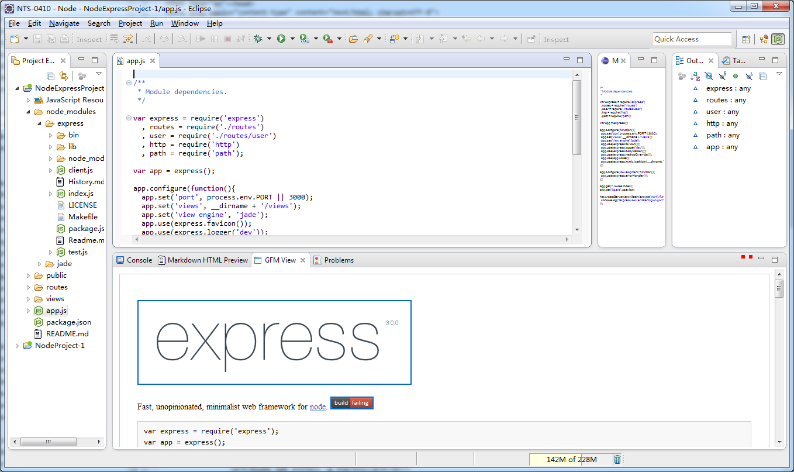

Nodeclipse NTS - Node Tool Suite
 Latest version is shown on Marketplace.{kind=link}
Eclipse Marketplace description:
Nodeclipse NTS (Node.js Tool Suite) for Windows x64 is released on SourceForge. It is based on Eclipse Kepler IDE for Jave EE developers and includes Nodeclipse 0.4 and other plugins. As 280 MB zip archive, download managers (like FDM) are recommended. Included plugins are - Nodeclipse 0.4.0 - Chrome Development Tools, fixed for debugging Node.js - MarkDown (*.md) Editor (Integrated) - GitHub Flavored Markdown (GFM) Viewer (Optional)- Eclipse 4.x Chrome Theme (Optional)
Troubleshooting
This is Eclipse distribution. All Eclipse related knowledge is applied. Check home page for announcements. Try support options. If you think that something is buggy or slow _just don't use it_ . (There are some experimental features.) We would be thankful for detailed problem description. This way you can contribute. Read carefully support options. If you really care, help us to improve it by developing with us together.
comments powered by Disqus